4. Numbers¶
4.1. Fibonacci numbers¶
4.1.1. Exponential implementation¶
Let
"Integer, protocol *Containers-Essentials"
slowFibonacci
^ self < 2
ifTrue: [ self ]
ifFalse: [
(self - 1) slowFibonacci addNumber: (self - 2) slowFibonacci ]
in
"MWVisualizationsTest, protocol tests"
testProfileSlowFibonacciWithAdd
| wrapper handlerExecution tree metadata result wrapperAdd presenter |
tree := CTOrderPreservingTree new.
handlerExecution := MWHandlerProfiling new
tree: tree;
yourself.
wrapper := MWDecorator new
compiledMethod: Integer >> #slowFibonacci;
handler: handlerExecution;
yourself.
wrapperAdd := MWDecorator new
compiledMethod: Number >> #addNumber:;
handler: handlerExecution;
yourself.
result := MWSession new
add: wrapper;
add: wrapperAdd;
value: [ 6 slowFibonacci ].
metadata := IdentityDictionary new.
handlerExecution metadata: metadata.
"Show here the new presenter."
presenter := (MWSpPresenter on: tree -> metadata)
useShapeSlotsDfsTree;
openWithSpec;
yourself.
self
assert: tree size equals: 37;
assert: result equals: 7 fibonacciNumbers last. " 55"
self
export: tree
pathSuffix: 'sequence-diagram'
onCanvasDo: [ :aCanvas :useless | presenter currentCanvas: aCanvas ]
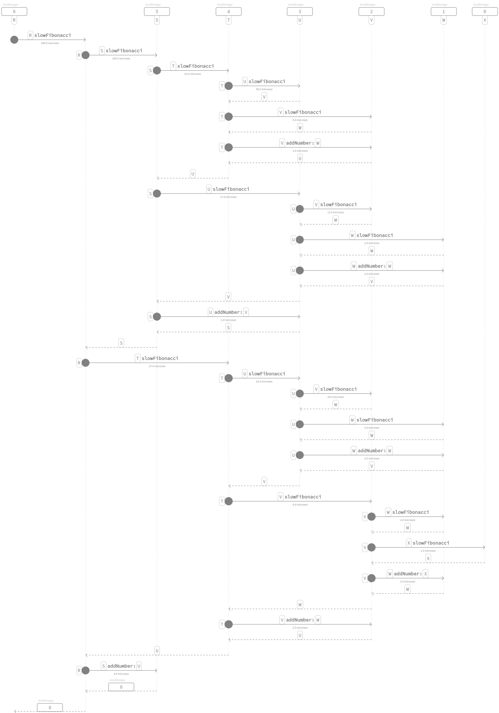
Moreover, we can inspect the sequence of additions that are performed,
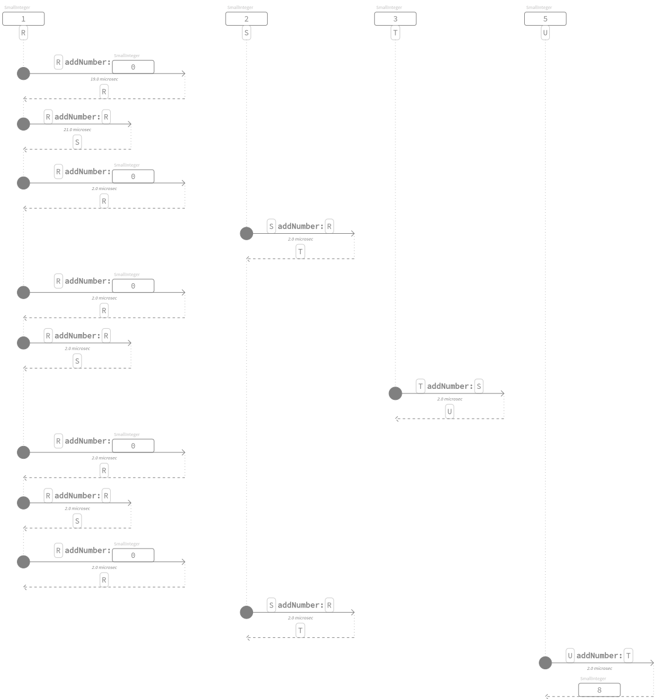4.1.2. Memoized implementation¶
To take the exponential complexity of the previous implementation we can use either memoization,
"MWVisualizationsTest, protocol tests"
testProfileSlowFibonacciMemoingWithAdd
| tree result handlerExecution metadata presenter handlerCopying |
tree := CTOrderPreservingTree new.
handlerExecution := MWHandlerProfiling new
tree: tree;
yourself.
handlerCopying := MWHandlerReceiverArgumentsCopying new
handler: handlerExecution;
yourself.
result := MWSession new
add: (MWDecorator new
compiledMethod: Integer >> #slowFibonacciMemo:;
handler: handlerCopying;
yourself);
add: (MWDecorator new
compiledMethod: Number >> #addNumber:;
handler: handlerExecution;
yourself);
value: [ 6 slowFibonacciMemo: Dictionary new ].
metadata := IdentityDictionary new.
handlerExecution metadata: metadata.
handlerCopying metadata: metadata.
"Show here the new presenter."
presenter := (MWSpPresenter on: tree -> metadata)
useShapeSlotsDfsTree;
openWithSpec;
yourself.
self
assert: tree size equals: 16;
assert: result equals: 7 fibonacciNumbers last.
self
export: tree
pathSuffix: 'sequence-diagram'
onCanvasDo: [ :aCanvas :useless | presenter currentCanvas: aCanvas ]
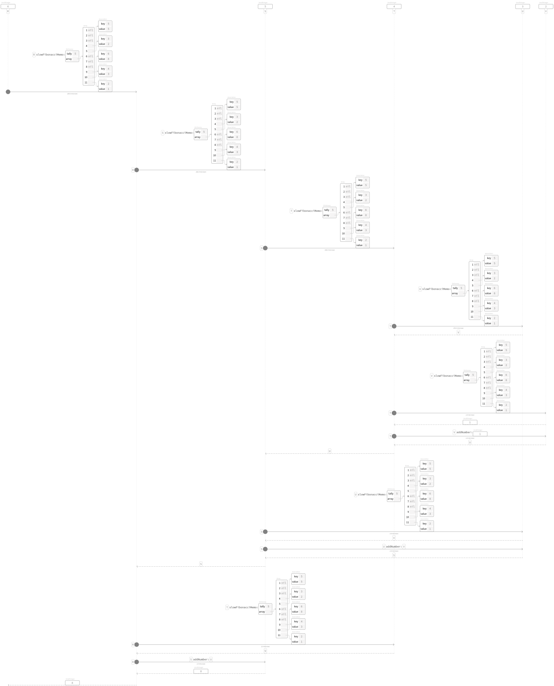
where
"Integer, protocol *Containers-Essentials"
slowFibonacciMemo: aDictionary
^ self < 2
ifTrue: [ self ]
ifFalse: [
aDictionary at: self ifAbsentPut: [
(self - 1 slowFibonacciMemo: aDictionary) addNumber:
(self - 2 slowFibonacciMemo: aDictionary) ] ]
4.1.3. Tail-call implementation¶
Or tail-call messages,
"MWVisualizationsTest, protocol tests"
testProfileSlowFibonacciTailWithAdd
| wrapper handlerExecution tree metadata result wrapperAdd presenter |
tree := CTOrderPreservingTree new.
handlerExecution := MWHandlerProfiling new
tree: tree;
yourself.
wrapper := MWDecorator new
compiledMethod: Integer >> #slowFibonacci:tail:;
handler: handlerExecution;
yourself.
wrapperAdd := MWDecorator new
compiledMethod: Number >> #addNumber:;
handler: handlerExecution;
yourself.
result := MWSession new
add: wrapper;
add: wrapperAdd;
value: [ 6 slowFibonacci: 0 tail: 1 ].
metadata := IdentityDictionary new.
handlerExecution metadata: metadata.
"Show here the new presenter."
presenter := (MWSpPresenter on: tree -> metadata)
useShapeSlotsDfsTree;
openWithSpec;
yourself.
self
assert: tree size equals: 13;
assert: result equals: 7 fibonacciNumbers last.
self
export: tree
pathSuffix: 'sequence-diagram'
onCanvasDo: [ :aCanvas :useless | presenter currentCanvas: aCanvas ]

where
"Integer, protocol *Containers-Essentials"
slowFibonacci: a tail: b
^ self > 0
ifTrue: [ self - 1 slowFibonacci: b tail: (a addNumber: b) ]
ifFalse: [ a ]
4.2. Multiplication¶
4.2.1. Horner's method¶
Let
"SequenceableCollection, protocol *Containers-Essentials"
horner: base init: init
^ self
inject: init
into: [ :acc :each | (acc multiplyNumber: base) addNumber: each ]
in
"MWVisualizationsTest, protocol tests"
testSequenceableCollectionHornerInit
| tree metadata result handlerExecution handlerCopying presenter |
tree := CTOrderPreservingTree new.
handlerExecution := MWHandlerProfiling new
tree: tree;
yourself.
handlerCopying := MWHandlerReceiverArgumentsCopying new
handler: handlerExecution;
yourself.
result := (MWSession withAllImplementations: {
(SequenceableCollection >> #horner:init:).
"(Collection >> #inject:into:)."
(Number >> #addNumber:).
(Number >> #multiplyNumber:) })
do: [ :each | each handler: handlerCopying ];
value: [ { 1. 3. 5. 6 } hornerBase10 ].
metadata := IdentityDictionary new.
handlerExecution metadata: metadata.
handlerCopying metadata: metadata.
"Show here the new presenter."
presenter := (MWSpPresenter on: tree -> metadata)
useShapeSlotsDfsTree;
openWithSpec;
yourself.
self
assert: tree size equals: 9;
assert: result equals: 1356.
self
export: tree
pathSuffix: 'sequence-diagram'
onCanvasDo: [ :aCanvas :useless | presenter currentCanvas: aCanvas ];
exportSlotsGraphOf: result
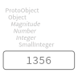
that admits the profiling,
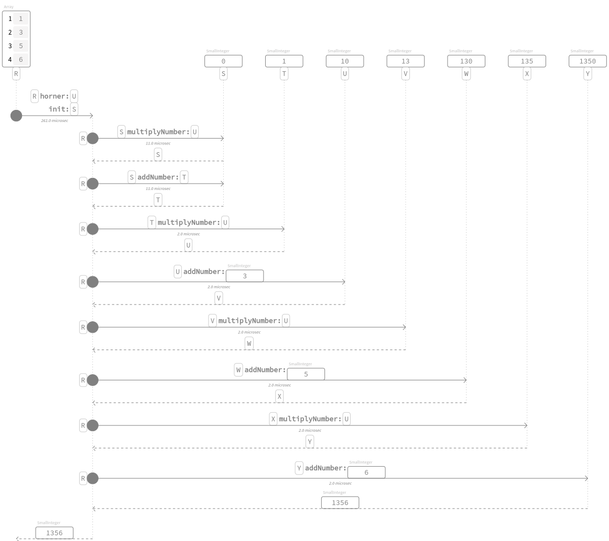4.2.2. Estrin's method¶
According to [Est60], let
"SequenceableCollection, protocol *Containers-Essentials"
estrin: base init: init
^ self ifEmpty: [ init ] ifNotEmpty: [
self size = 1
ifTrue: [ self first ]
ifFalse: [
| odd even squared |
even := self class streamContents: [ :evenStream |
odd := self class streamContents: [ :oddStream |
self withIndexDo: [ :each :i |
i even
ifTrue: [ evenStream nextPut: each ]
ifFalse: [ oddStream nextPut: each ] ] ] ].
squared := base squared.
(even estrin: squared init: init) addNumber:
((odd estrin: squared init: init) multiplyNumber: base) ] ]
in
"MWVisualizationsTest, protocol tests"
testSequenceableCollectionEstrinInit
| tree metadata result handlerExecution handlerCopying presenter |
tree := CTOrderPreservingTree new.
handlerExecution := MWHandlerProfiling new
tree: tree;
yourself.
handlerCopying := MWHandlerReceiverArgumentsCopying new
handler: handlerExecution;
yourself.
result := (MWSession withAllImplementations: {
(SequenceableCollection >> #estrin:init:).
"(Collection >> #inject:into:)."
(Number >> #addNumber:).
(Number >> #multiplyNumber:) })
do: [ :each | each handler: handlerCopying ];
value: [ { 1. 3. 5. 6. 9 } estrin: 10 ].
metadata := IdentityDictionary new.
handlerExecution metadata: metadata.
handlerCopying metadata: metadata.
"Show here the new presenter."
presenter := (MWSpPresenter on: tree -> metadata)
useShapeSlotsDfsTree;
openWithSpec;
yourself.
self
assert: tree size equals: 17;
assert: result equals: 13569.
self
export: tree
pathSuffix: 'sequence-diagram'
onCanvasDo: [ :aCanvas :useless | presenter currentCanvas: aCanvas ];
exportSlotsGraphOf: result
where
"SequenceableCollection, protocol *Containers-Essentials"
estrin: x
^ self reversed estrin: x init: 0
admits the profiling,
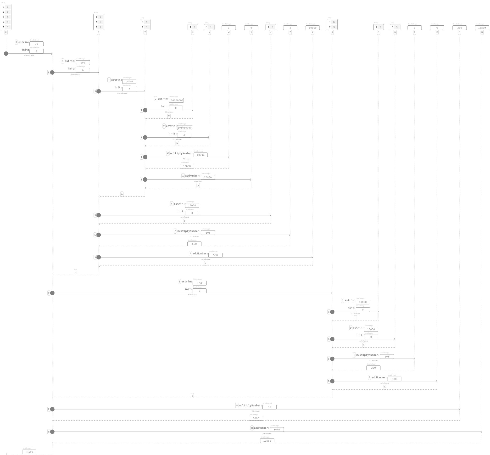4.2.3. Karatsuba's method¶
Here we explore a large integer

that equals \((42!)^{2}\) where squaring is performed by multiplication of \(42!\) with itself by means of the message
"Integer, protocol *Containers-Essentials"
karatsuba: anInteger base: base
^ ((self between: 0 and: base - 1) and: [
anInteger between: 0 and: base - 1 ])
ifTrue: [ self multiplyNumber: anInteger ]
ifFalse: [
| x y yDigits |
(self numberOfDigitsInBase: base)
> (anInteger numberOfDigitsInBase: base)
ifTrue: [
x := self.
y := anInteger ]
ifFalse: [
x := anInteger.
y := self ].
yDigits := y numberOfDigitsInBase: base.
x
halves: [ :xHigh :xLow :xn :xl |
y
halves: [ :yHigh :yLow :yn :yl |
| p pp xyHigh xyLow exp |
p := (xHigh addNumber: xLow)
karatsuba: (yHigh addNumber: yLow)
base: base.
xyHigh := xHigh karatsuba: yHigh base: base.
xyLow := xLow karatsuba: yLow base: base.
exp := base ** xl.
pp := p subtractNumber: (xyHigh addNumber: xyLow).
"According to the Horner schema."
(((xyHigh multiplyNumber: exp) addNumber: pp)
multiplyNumber: exp) addNumber: xyLow ]
at: xl
digits: yDigits
base: base ]
base: base ]
according to the algorithm described in [KT05], page 232. Such algorithm runs in \(O(n^{\log_{2}{3}})\) because the input numbers \(x\) and \(y\),
and let \(n = \max(a, b)\), are broken in two parts
respectively, and there are three recursive #karatsuba:base: message sends.
The implementation follows from both the fact
and
respectively, more references can also be found in [Wik]. Two auxiliary messages
"Integer, protocol *Containers-Essentials"
halves: aBlock base: aBase
| n |
n := self numberOfDigitsInBase: aBase.
^ self
halves: aBlock
at: (n / 2) ceiling
digits: n
base: aBase
and
"Integer, protocol *Containers-Essentials"
halves: aBlock at: l digits: n base: aBase
| low high lSucc |
lSucc := l + 1.
low := (1 to: l) inject: 0 into: [ :acc :i |
| d |
d := (self digitAt: i base: aBase) * (aBase ** (i - 1)).
d + acc ].
high := (lSucc to: n) inject: 0 into: [ :acc :i |
| d |
d := (self digitAt: i base: aBase) * (aBase ** (i - lSucc)).
d + acc ].
^ aBlock
value: high
value: low
value: n
value: l
helps the recursive message.
A complete profiling of \(835 \cdot 714\) using this technique looks like
4.2.4. Factorials¶
According the post [VC], we implement the factorial function twice in order to compute
On one hand, the slow version follows straightforward from the mathematical definition,
"Integer, protocol *Containers-Essentials"
factorialRecursive
^ self > 0
ifTrue: [
self multiplyNumber: (self subtractNumber: 1) factorialRecursive ]
ifFalse: [
self = 0
ifTrue: [ 1 ]
ifFalse: [ self error: 'Not valid for negative integers' ] ]
and the interactions are
On the other hand, the fast version uses a divide and conquer approach,
"Integer, protocol *Containers-Essentials"
productTo: upper
"Return the product of all integers between
the receiver (exclusive) and upper (inclusive)."
| delta product middle |
delta := upper subtractNumber: self.
^ delta <= 0
ifTrue: [ Error signal ]
ifFalse: [
delta < 5
ifTrue: [
product := upper.
1 to: delta - 1 do: [ :each |
product := (upper subtractNumber: each) multiplyNumber:
product ].
product ]
ifFalse: [
middle := self + upper >> 1.
(self productTo: middle) multiplyNumber:
(middle productTo: upper) ] ]
and the interactions are
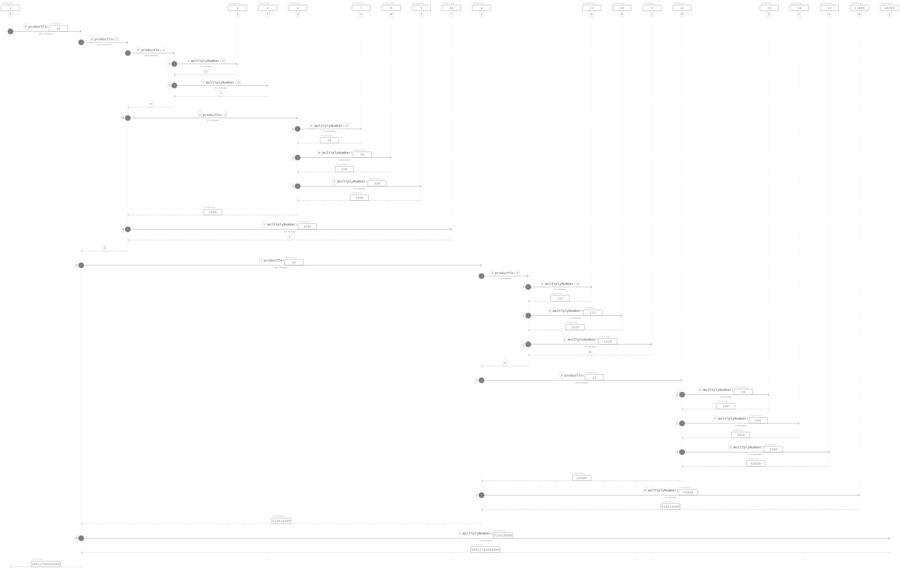4.3. Quotients and remainders¶
Lets divide \(21\) by \(9\),
"SymbolicIntegerTest, protocol tests"
testStandardQuoRem21Over9
| quoRem |
quoRem := 21 /% 9.
self assert: quoRem equals: 21 / 9.
^ self exportSlotsGraphOf: quoRem

by means of the binary message
"Integer, protocol *Containers-Essentials"
/% anObject
^ anObject quoRemInteger: self
that dispatches
"Integer, protocol *Containers-Essentials"
quoRemInteger: anInteger
^ QuoRemStandard a: anInteger b: self
which instantiate a symbolic Magnitude object via the class-side message
"QuoRemComplementary class, protocol as yet unclassified"
a: a b: b
^ self basicNew
a: a;
b: b;
initialize;
yourself
where both the quotient and the remainder are computed in the overridden
"QuoRemStandard, protocol accessing"
initialize
super initialize.
quo := self value floor.
rem := a - (quo * b)
as the usual computation does and the assertion checks in the initial test case.
The same division can be carried out by
"SymbolicIntegerTest, protocol tests"
testComplementaryQuoRem21Over9
| quoRem |
quoRem := 21 /%~ 9.
self assert: quoRem equals: 21 / 9.
^ self exportSlotsGraphOf: quoRem

that yields a negative remainder, shown by full dots. To do that, we have the following messages chain
"Integer, protocol *Containers-Essentials"
/%~ anObject
^ anObject quoRemComplementaryInteger: self
that dispatches
"Integer, protocol *Containers-Essentials"
quoRemComplementaryInteger: anInteger
^ QuoRemComplementary a: anInteger b: self
which instantiate a symbolic Magnitude object of class
Magnitude << #QuoRemComplementary
slots: { #a . #b . #ratio . #quo . #rem };
tag: 'Numbers';
package: 'Containers-Essentials'
Both the quotient and the remainder are computed in the initialization message
"QuoRemComplementary, protocol accessing"
initialize
ratio := a / b.
quo := self value ceiling.
rem := a - (quo * b)
The latter representation is uniform in the sense that it yields a rectangle of dots
that are stacked horizontally, where the number of rows equals the quotient of the division
while the number of columns equals the divisor denoted by the instance variable b.
"SymbolicIntegerTest, protocol tests"
testComplementaryQuoRem9Over21
| quoRem |
quoRem := 9 /%~ 21.
self assert: quoRem equals: 9 / 21.
^ self exportSlotsGraphOf: quoRem

"SymbolicIntegerTest, protocol tests"
testQuoRem9Over21
| quoRem |
quoRem := 9 /% 21.
self assert: quoRem equals: 9 / 21.
^ self exportSlotsGraphOf: quoRem

"SymbolicIntegerTest, protocol tests"
testQuoRemMinimal9Over21
| quoRem |
quoRem := 9 /%< 21.
self assert: quoRem equals: 9 / 21.
^ self exportSlotsGraphOf: quoRem

4.4. Greatest Common Divisor¶
"SymbolicIntegerTest, protocol tests"
testGCDof9and21
| quoRem |
quoRem := 9 >|< 21.
self assert: quoRem equals: (9 gcd: 21).
^ self exportSlotsGraphOf: quoRem

"SymbolicIntegerTest, protocol tests"
testGCDof12and21
| quoRem |
quoRem := 12 >|< 21.
self assert: quoRem equals: (12 gcd: 21).
^ self exportSlotsGraphOf: quoRem

4.5. Diophantine equations¶
4.5.1. Coprimes¶
"SymbolicIntegerTest, protocol tests"
testGCDof83and71
| quoRem |
quoRem := 83 >|< 71.
self assert: quoRem equals: (83 gcd: 71).
^ self exportSlotsGraphOf: quoRem

4.5.2. \(\mathbb{Z}_{17}\) field¶
"SymbolicIntegerTest, protocol tests"
testGCDofZ17
| field prime interval |
prime := 17.
interval := 1 to: prime - 1.
field := interval collect: [ :each | each >|< prime ].
self
assert: field
equals: (interval collect: [ :each | prime gcd: each ]).
^ self exportSlotsGraphOf: field

"SymbolicIntegerTest, protocol tests"
testGCDofMultiplicativeInversesInZ17
| gcds inverses |
gcds := self testGCDofZ17.
inverses := PointArray new: gcds size.
gcds withIndexDo: [ :each :index |
inverses at: index put: each b @ each inverseMultiplicativeOfb key ].
^ self exportSlotsGraphOf: inverses

4.5.3. \(GCD(f_{n}, f_{n+1})\), where \(f_{n}\) is the \(n\)-th Fibonacci number¶
"SymbolicIntegerTest, protocol tests"
testGCDofAdjacentFibonacciNumbers
| fibs gcds |
fibs := OrderedCollection with: 1 with: 1.
3 to: 11 do: [ :i | fibs add: (fibs at: i - 2) + (fibs at: i - 1) ].
gcds := fibs
with: fibs allButFirst , { (fibs lastButOne + fibs last) }
collect: [ :r :s | r >|< s ].
self assert: gcds equals: (gcds collect: [ :each | 1 ]).
^ self exportSlotsGraphOf: gcds

4.5.4. Kissing Fractions¶
Consider the Fraction
"EssentialsObjectTest, protocol tests"
testInspectFractionForKisses
^ self exportSlotsGraphOf: 4 / 17

which kisses other fractions, by tangents of Ford’s circles
"EssentialsObjectTest, protocol tests"
testInspectFractionKissing
| aFraction |
aFraction := self testInspectFractionForKisses.
self assert: aFraction kissingFractions equals: {
(1 / 5).
(2 / 9).
(3 / 13).
(4 / 17).
(1 / 4).
(1 / 3).
(1 / 2) }.
^ self exportShapeOf: aFraction accessorBlock: #asShapeFordCircles

where
"Fraction, protocol *Containers-Essentials"
kissingFractions
| kissedFractions vl |
kissedFractions := Set new.
vl := ValueLink new
value: self asFractionWrtFloor;
yourself.
[ vl ] whileNotNil: [
| gcd diophantinePoint next less aFraction |
aFraction := vl value.
kissedFractions add: aFraction.
gcd := aFraction numerator >|< aFraction denominator.
diophantinePoint := gcd point.
next := diophantinePoint x / diophantinePoint y negated.
less := aFraction numerator - next numerator
/ (aFraction denominator - next denominator).
vl := next kissingFractionLink:
(less kissingFractionLink: vl nextLink) ].
^ kissedFractions asArray
sort;
yourself
and the polymorphism on #kissingFractionLink: reads as follows
"Fraction, protocol *Containers-Essentials"
kissingFractionLink: aLink
^ self ~~> aLink
"Integer, protocol *Containers-Essentials"
kissingFractionLink: aLink
^ aLink
Moreover, consider the reciprocal
"EssentialsObjectTest, protocol tests"
testInspectFractionReciprocalKissing
| aFraction |
aFraction := self testInspectFractionKissing reciprocal.
self assert: aFraction kissingFractions equals: {
(1 / 4).
(1 / 3).
(1 / 2) }.
^ self exportShapeOf: aFraction accessorBlock: #asShapeFordCircles

which yields a simpler visualization.
4.6. Skew Binary Canonical sparse representation¶
Using the conversion message
"Integer, protocol *Containers-Essentials"
asSkewBinaryCanonicalSparse
| skew |
skew := SkewBinaryCanonicalNumber new.
self timesRepeat: [ skew := skew increment ].
^ skew
we can inspect by means of the test case
"EssentialsObjectTest, protocol tests"
testInspectSkewBinaryCanonicalSparse
| skewNumbers backwards |
skewNumbers := (1 to: 20) collect: [ :each |
each asSkewBinaryCanonicalSparse yourself: [ :skew |
self assert: skew asInteger equals: each ] ].
self exportSlotsGraphOf: skewNumbers pathSuffix: 'increasing'.
backwards := skewNumbers reversed
with: (19 to: 0 by: -1)
collect: [ :skew :each |
skew decrement yourself: [ :previous |
self assert: previous asInteger equals: each ] ].
self exportSlotsGraphOf: backwards pathSuffix: 'decreasing'
that does its asserts using the backward conversion message,
"SkewBinaryCanonicalNumber, protocol converting"
asInteger
| value |
value := 0.
representation do: [ :each | value := value + each ].
^ value
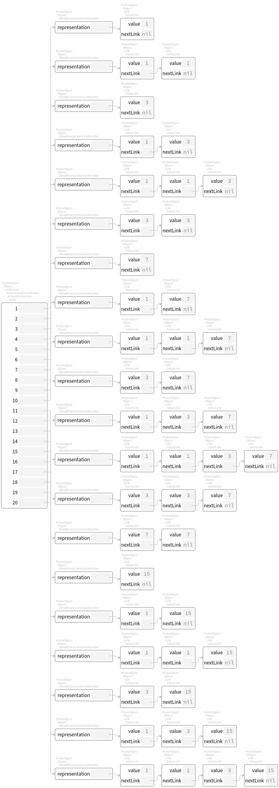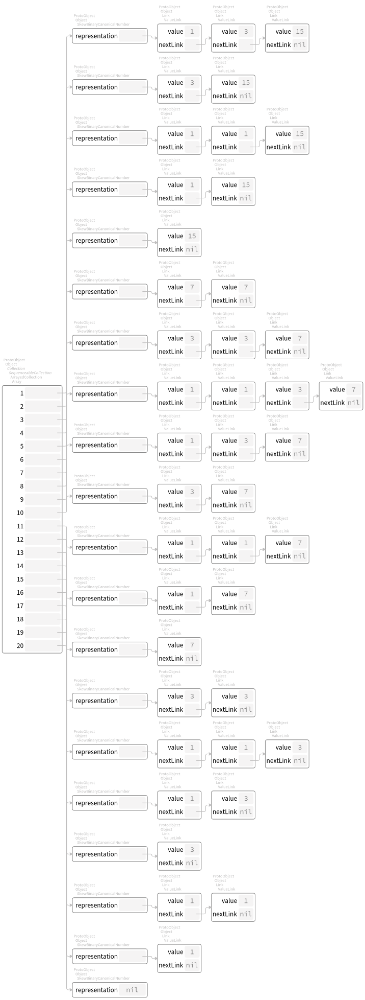